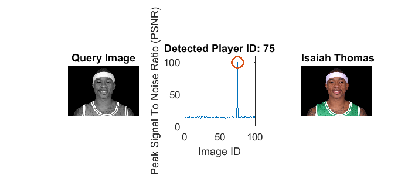

Contents
Initialization
clear; close all; clc
imagePath = ['C:', filesep(),'Users',filesep(), 'Pavel',filesep(),'Documents',filesep(),'MATLAB',filesep(),'LabProject_Final',filesep(),'Player_Images', filesep()];
playerNumber = 75;
playerImage = [imagePath, 'player', num2str(playerNumber), '.png'];
if ~exist(playerImage,'file')
error('Query image does not exist... Please select a playerNumber between 1 and 100.');
end
Create and Unscramble Image Database
if ~exist('imageDatabases.mat','file')
fprintf(2,'Constructing Image Database...\n');
scrambledDatabase = createImageDatabase(imagePath);
fprintf('Done!\n\n');
fprintf(2,'Unscrambling the Image Database...\n');
[correctDatabase,scrambledIndices] = unScrambleDatabase(imagePath,scrambledDatabase);
fprintf('Done!\n\n');
fprintf(2,'Verifying that the Image Database is corrected...\n');
[~,correctIndices] = unScrambleDatabase(imagePath,correctDatabase);
if exist('calcMSE','file')
if calcMSE(correctIndices,1:length(correctIndices)) == 0
save('imageDatabases.mat','scrambledDatabase','correctDatabase','scrambledIndices','correctIndices');
warningFlag = false;
fprintf('Done!\n\n');
else
warningFlag = true;
warning('Image Database was not properly unscrambled');
fprintf('\n');
end
else
warning('Successful unscrambling cannot be currently evaluated... Create "calcMSE" function first');
fprintf('\n');
end
else
fprintf(2,'Correct Database is already stored in a file... Loading...\n');
scrambledDatabase = load('imageDatabases.mat','scrambledDatabase');
scrambledDatabase = scrambledDatabase.scrambledDatabase;
correctDatabase = load('imageDatabases.mat','correctDatabase');
correctDatabase = correctDatabase.correctDatabase;
scrambledIndices = load('imageDatabases.mat','scrambledIndices');
scrambledIndices = scrambledIndices.scrambledIndices;
correctIndices = load('imageDatabases.mat','correctIndices');
correctIndices = correctIndices.correctIndices;
fprintf('Done!\n\n');
end
if exist('plotIndices','file')
plotIndices(scrambledIndices,correctIndices)
else
warning('Indices cannot be currently plotted... Create "plotIndices" function first.');
fprintf('\n');
end
Correct Database is already stored in a file... Loading...
Done!
Checking if you can identify yourself in the database
if exist('readImage','file')
x = readImage(playerImage);
else
x = [];
end
fprintf(2,'Checking Player Identity in the Scrambled Database...\n'); pause(0.2);
if exist('findMinimumErrorPosition','file') && exist('computePSNRs','file')
identificationFlag = true;
minPos = findMinimumErrorPosition(makeVector(x),scrambledDatabase);
PSNRs = computePSNRs(makeVector(x),scrambledDatabase);
else
identificationFlag = false;
end
if identificationFlag
playerName = identifyPlayer(x,imagePath,minPos,PSNRs);
fprintf('Player identified as %s at the Scrambled Database column: %d!\n\n', playerName, minPos);
pause(0.2);
else
warning('Players cannot be currently identified in the Scrambled Database... Create "findMinimumErrorPosition" and "computePSNRs" functions first.');
fprintf('\n');
end
fprintf(2,'Checking Player Identity in the Corrected Database...\n'); pause(0.2);
if exist('findMinimumErrorPosition','file') && exist('computePSNRs','file')
identificationFlag = true;
minPos = findMinimumErrorPosition(makeVector(x),correctDatabase);
PSNRs = computePSNRs(makeVector(x),correctDatabase);
else
identificationFlag = false;
end
if identificationFlag
PlayerName = identifyPlayer(x,imagePath,minPos,PSNRs);
fprintf('Player identified as %s at the Corrected Database column: %d!\n\n', PlayerName, minPos);
pause(0.2);
else
warning('Players cannot be currently identified in the Corrected Database... Create "findMinimumErrorPosition" and "computePSNRs" functions first.');
fprintf('\n');
end
corruptionPercentages = 0.2:0.1:0.9;
fprintf(2,'Corrupting player image %d times...\n', numel(corruptionPercentages));
corruptedPlayerImages = corruptPlayerImage(x,playerNumber,corruptionPercentages);
fprintf('Done!\n\n');
dictionaryData = load('DictionaryData.mat');
dictionary = dictionaryData.DictionaryData.dictionary;
blockSize = dictionaryData.DictionaryData.blockSize;
fprintf(2,'Reconstructing player images using patch dictionary...\n');
if exist('reconstructPlayerImages','file')
[reconstructedPlayerImages,reconstructionPSNRs] = reconstructPlayerImages(corruptedPlayerImages,dictionary,blockSize,x);
fprintf('Done!\n\n');
else
warning('Corrupted images cannot be currently reconstructed... create "reconstructPlayerImages" function first.');
fprintf('\n');
end
fprintf(2,'Plotting reconstruction PSNRs...\n');
if exist('reconstructionPSNRs','var')
figure, bar(corruptionPercentages,reconstructionPSNRs);
title('Reconstruction Performance under Image Corruption');
xlabel('Percentage of Corrupted Pixels');
ylabel('Peak Signal to Noise Ratio (PSNR)');
fprintf('Done!\n\n');
else
warning('Reconstruction PSNRs cannot be currently plotted... create "reconstructPlayerImages" function first');
end
Checking Player Identity in the Scrambled Database...
Player identified as Thaddeus Young at the Scrambled Database column: 85!
Checking Player Identity in the Corrected Database...
Player identified as Isaiah Thomas at the Corrected Database column: 75!
Corrupting player image 8 times...
Done!
Reconstructing player images using patch dictionary...
Done!
Plotting reconstruction PSNRs...
Done!

Checking if you can identify yourself in the database
fprintf(2,'Associating corrupted images with database images...\n');
if exist('corruptedPlayerImages','var') && exist('associateImagesWithDatabase','file')
corruptedMinPos = associateImagesWithDatabase(corruptedPlayerImages,correctDatabase);
fprintf('Done!\n\n');
else
warning('Corrupted images cannot be currently associated with database... create "associateImagesWithDatabase" function first');
fprintf('\n');
end
fprintf(2,'Associating reconstructed images with database images...\n');
if exist('reconstructedPlayerImages','var') && exist('associateImagesWithDatabase','file')
identificationFlag = true;
reconstructedMinPos = associateImagesWithDatabase(reconstructedPlayerImages,correctDatabase);
fprintf('Done!\n\n');
else
identificationFlag = false;
warning('Reconstructed images cannot be currently associated with database... create "associateImagesWithDatabase" function first');
fprintf('\n');
end
fprintf(2,'Checking player identity for each reconstructed image...\n');
if identificationFlag == true
identifyImages2(imagePath,corruptedPlayerImages,reconstructedPlayerImages,corruptedMinPos,reconstructedMinPos,size(x));
fprintf('Done!\n\n');
else
warning('All images cannot be currently identified... create "reconstructPlayerImages" and "associateImageWithDatabase" functions first.');
fprintf('\n');
end
Associating corrupted images with database images...
Done!
Associating reconstructed images with database images...
Done!
Checking player identity for each reconstructed image...
Player identified as Isaiah Thomas before reconstruction.
Player identified as Isaiah Thomas after reconstruction.
Player identified as Isaiah Thomas before reconstruction.
Player identified as Isaiah Thomas after reconstruction.
Player identified as Isaiah Thomas before reconstruction.
Player identified as Isaiah Thomas after reconstruction.
Player identified as Nick Young before reconstruction.
Player identified as Isaiah Thomas after reconstruction.
Player identified as JR Smith before reconstruction.
Player identified as Isaiah Thomas after reconstruction.
Player identified as JR Smith before reconstruction.
Player identified as Isaiah Thomas after reconstruction.
Player identified as JR Smith before reconstruction.
Player identified as Isaiah Thomas after reconstruction.
Player identified as JR Smith before reconstruction.
Player identified as Isaiah Thomas after reconstruction.
Done!